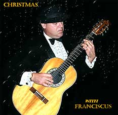
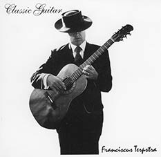

Solo Guitar Favorites, Christmas with Franciscus, Classic Guitar, and Spanish Guitar compact discs are currently available for sale. Contact me directly to order a copy, or order online at CDBaby.com.
Current Albums
Solo Guitar Favorites (2007)
| Cavatina |
Stanley Myers | 3:20 |
| Cataluna |
Isaac Albéniz | 6:03 |
| Classical Gas |
Mason Williams | 3:16 |
| Adelita & Lagrima |
Francisco Tárrega | 2:49 |
| Prelude No. 1 |
H. Villa Lobos | 4:43 |
| Andaluza |
Enrique Granados | 4:33 |
| Dedicatoria |
Enrique Granados | 1:45 |
| Malaguena |
E. Lecuona | 4:50 |
| La Paloma & Spanish Eyes |
Sebastion de Yradier & Kaempfert | 6:14 |
| Miller's Dance |
Manuel de Falla | 2:44 |
| Aranjuez (Adagio/Cadenza) |
Joaquín Rodrigo | 9:15 |
| Chaconne in D Minor |
J.S. Bach | 12:49 |
| | 62:21 |

Christmas with Franciscus (2002)
| O come, O come, Emmanuel | 1:35 |
| Away in a Manger | 1:33 |
| Silent Night | 3:13 |
| Oh Holy Night | 2:53 |
| Joy to the World | 1:16 |
| O Little Town of Bethlehem | 1:41 |
| O Come All Ye Faithful | 2:09 |
| It Came Upon the Midnight Clear | 1:33 |
| Hark, the Herald Angels Sing | 1:31 |
| God Rest Ye Merry Gentlemen | 1:36 |
| We Three Kings | 2:20 |
| Angels We Have Heard On High | 1:30 |
| The First Noel | 1:45 |
| Jesu, Joy of Man's Desiring | 3:06 |
| Greensleeves | 1:44 |
| Good King Wenceslas | 1:13 |
| Coventry Carol | 1:15 |
| Jingle Bells | 1:47 |
| Deck the Halls with Boughs of Holly | 1:11 |
| O Tennenbaum | 1:38 |
| Silver Bells | 1:53 |
| Walking in a Winter Wonderland | 2:01 |
| We Wish You a Merry Christmas | 1:04 |
| 41:27 |

Classic Guitar (2001)
| Moonlight Sonata |
Ludvig von Beethoven | 4:49 |
| Pavane pour une Infant Défunte |
Maurice Ravel | 5:41 |
| Reverie |
Claude Debussy | 4:36 |
| Elegy |
Johann kaspar Mertz | 7:40 |
| Choro Typico |
H. Villa Lobos | 4:54 |
| Prelude #3 |
H. Villa Lobos | 5:28 |
| Prelude in D minor |
Johann Sebastian Bach | 1:36 |
| Jesu, Joy of Man's Desiring |
Johann Sebastian Bach | 3:05 |
| Gavotte I and Gavotte II |
Johann Sebastian Bach | 4:24 |
| Chaconne |
Johann Sebastian Bach | 12:46 |
| |
54:59 |
Spanish Guitar (2000)
| Asturias |
Isaac Albéniz | 5:51 |
| Granada |
Isaac Albéniz | 4:41 |
| Recuerdos De La Alhambra |
Francisco Tárrega | 3:57 |
| Cadiz |
Isaac Albéniz | 5:45 |
| Romance |
Anonymous | 4:02 |
| Estudio Brillante De Alard |
Francisco Tárrega | 3:06 |
| Adelita |
Francisco Tárrega | 1:50 |
| La Paloma |
Sebastian de Yradier | 3:37 |
| Malaguena |
Francisco Tárrega | 4:00 |
| Capricho Arab |
Francisco Tárrega | 4:13 |
| Rumores De La Caleta |
Isaac Albéniz | 3:58 |
| Etude in A |
Matteo Carcassi | 3:34 |
| |
48:35 |
Discontinued
(no longer for sale)
Memories of Granville Island (1998)
| Side 1 |
|---|
| Asturias | Isaac Albéniz |
| Romance | Anonymous |
| Estudio Brilante De Alard | Francisco Tárrega |
| Recuerdos de la Alhambre | Francisco Tárrega |
| Granada | Isaac Albéniz |
| Capricho Arabe | Francisco Tárrega |
| Classical Gas | Mason Williams |
| Side 2 |
|---|
| Moonlight Sonata | Ludvig von Beethoven |
| Reverie | Claude Debussy |
| Prelude No. 3 | H. Villa Lobos |
| Pavane pour une Infant Défunte | Maurice Ravel |
| Jesu, Joy of Man's Desiring | J.S. Bach |
| Prelude in D Minor | J.S. Bach |
| Nature Boy | Eden Abba |